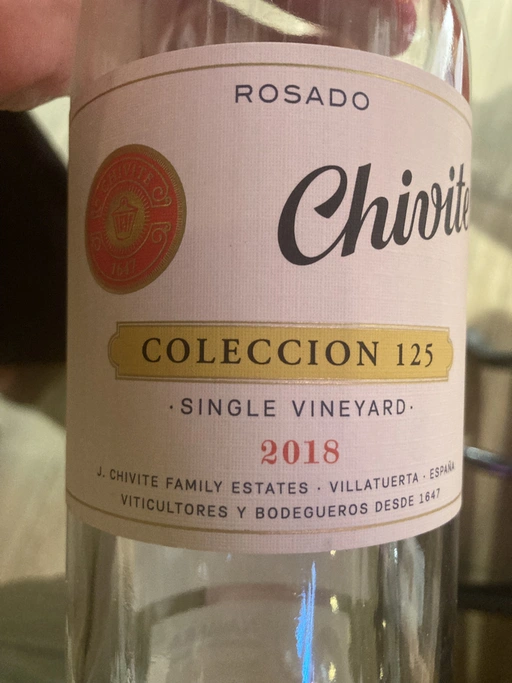

- Type
- Rose Still, Dry
- Producer
- Chivite
- Vintage
- 2018
- Location
- Spain, Navarra DO
- Grapes
- Tempranillo, Grenache
- Alcohol
- 14
- Sugar
- 1.5
- Price
- 1085 UAH
- Cellar
- N/A
Ratings
2021-08-19 - 8.00
It was really interesting to taste 2018 while my memory of 2006 is still fresh. Yes, unlike 2006 it is not 100% Tempranillo, and has some Garnacha, but still. Wonderful and serious rosé, still young with huge potential. Marzipan, strawberry, butter, vanilla, bakery. Quite sophisticated, quite delicate, fresh and well balanced.